企业智能体
概述
企业智能体 是一个云端 AI Agent 运行平台，为开发者提供完整的 Agent 生命周期管理能力：
- 创建和管理 Agent 运行环境 (Runtime)： 每个 Runtime 是一个独立的云端沙箱实例，包含完整的文件系统和终端环境。
- 与 Agent 进行实时对话： 通过 ACP 协议、SSE协议发送指令，接收 Agent 的流式输出和工具调用结果。
- 管理版本和快照： 创建 Checkpoint 和 Version，支持随时回滚到历史状态。
- 发布部署产物： 将 Agent 在沙箱中构建的 Web 应用或静态资源发布到公网。
核心概念
Agent
Agent 定义了一个 AI 助手的完整配置：使用什么模型、扮演什么角色（系统提示词）、拥有哪些技能和工具。
Runtime
Runtime 是企业智能体的核心资源，代表一个独立的 Agent 运行环境，是 Session 背后真正运行的云端沙箱环境。
每个 Runtime 包含：
- 一个云端沙箱实例（完整的 Linux 文件系统和终端）
- Agent 的配置信息（Manifest），是声明式配置文件（JSON），定义了 Agent 的身份、能力、工作空间和运行环境
- 一个或多个 Session（对话会话）
TIP
创建 Runtime 时会自动创建一个初始 Session。
Session
Session 代表一个用户与 Agent 之间的完整会话过程。一个 Runtime 下可以有多个 Session，每个 Session 维护独立的对话历史和 Agent 上下文。
快速开始
创建Agent
在 WorkBuddy 中登录分配了企业坐席的个人账号，点击右上角企业智能体进入企业后台-企业智能体开始创建 Agent。填写以下配置项后点击右上角发布完成 Agent 创建。
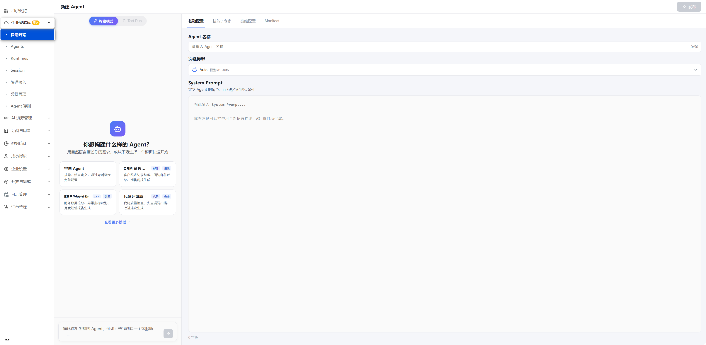
填写基础配置
在新建Agent-基础配置完成以下配置：
- 填写Agent 名称
- 选择模型：支持采用Auto模式自动选择或选择模型管理-模型列表中的内置模型。
- System Prompt：在输入框中定义 Agent 的角色、行为规范和约束条件。
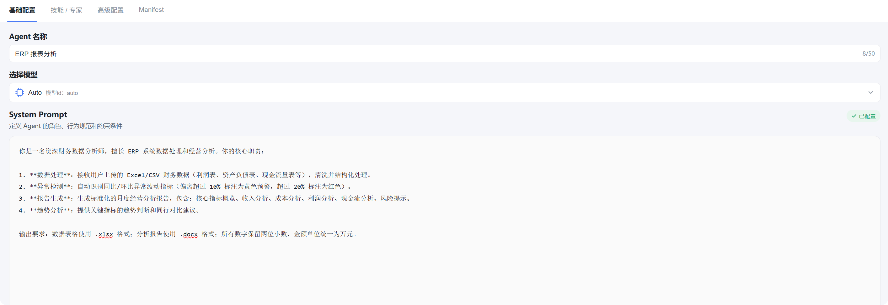
配置技能/专家/MCP
可以为Agent添加技能/专家/MCP，这些配置项会自动同步到 Agent 的 Manifest 中。
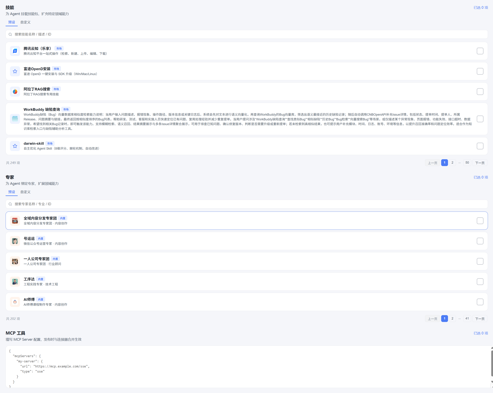
- 技能： 为 Agent 挂载技能包，扩充特定领域能力。
- 专家： 为 Agent 绑定专家，扩展领域能力。
- MCP： 填写 MCP Server 配置，发布时与连接器合并生效。
高级配置
- 记忆： 开启后 Agent 会记住多轮对话中的重要信息，跨轮次保持上下文。
- 知识库： 关联官方知识库和企业在后台配置的自定义知识库，Agent 可通过 RAG 检索获取知识库中的相关信息。
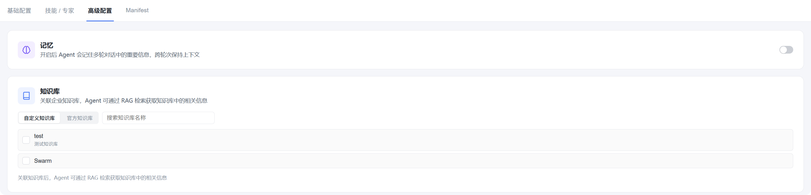
Manifest
Manifest 是 Agent 的声明式配置，在创建 Agent 时传入，可在企业后台编辑管理。
- 最小配置
{
"id": "my-agent",
"name": "My Agent",
"manifestVersion": "1.0"
}配置项说明
- 基础配置
字段 类型 必需 说明 id string ✅ Agent 唯一标识符 name string ✅ Agent 显示名称 manifestVersion string ✅ Manifest 版本（当前 1.0） system_prompt string ❌ 系统提示词（与 system_prompt_file 互斥） system_prompt_file string ❌ 系统提示词文件 URL - 能力配置
字段 类型 说明 rules Rule[] 行为规则文件列表 skills Skill[] 预定义技能（pdf, xlsx 等） plugins Plugin[] 扩展插件 mcp MCPConfig[] MCP 服务配置 subagents Subagent[] 可调用的子 Agent - 工作空间配置
字段 类型 必需 说明 workspaces[].name string ✅ 工作空间名（映射到 /workspace/<name>/） workspaces[].repository string ❌ Git 仓库 URL workspaces[].downloadUrl string ❌ 源码包 URL workspaces[].ref string ❌ Git 分支 / 标签 / Commit SHA workspaces[].initShellCommand string ❌ 初始化 Shell 命令 workspaces[].initCommand string ❌ CodeBuddy 初始化命令 - 环境配置
字段 类型 说明 secrets Secret[] 敏感信息（通过安全通道注入，不写入沙箱文件） envs EnvVar[] 环境变量（写入 manifest 并同步到运行环境）
安全提示
secrets 支持 ${VAR_NAME} 引用环境变量，避免硬编码密钥。系统会自动注入 AGENTOS_RUNTIME_ID 环境变量。
Test Run
在左侧对话框切换Test Run模式，使用当前配置对话测试 Agent 的响应效果。
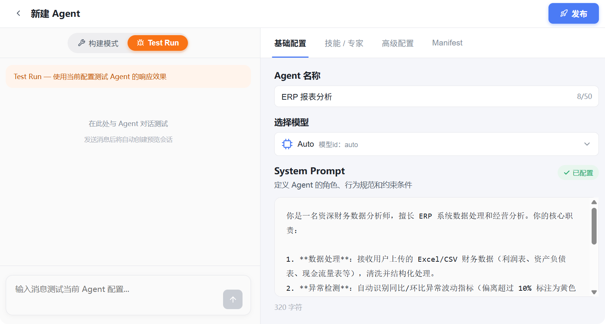
渠道接入
支持接入企微 AIBot、QQ 机器人、飞书和钉钉接收和回复Agent消息。在企业后台可以管理 Agent 的即时通讯渠道，每条接入记录对应一个 Bot → Session 的绑定关系
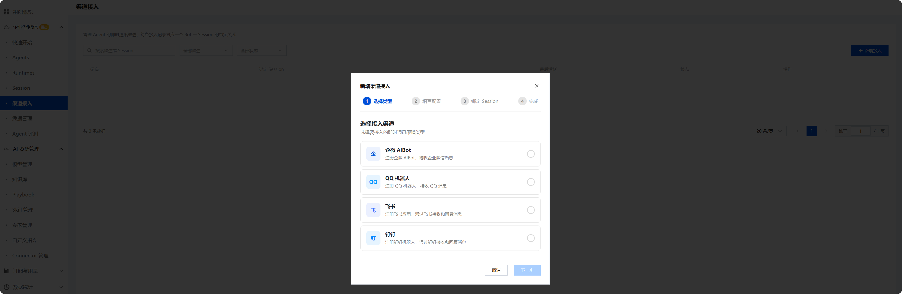
选择类型
选择企微 AIBot 接入：
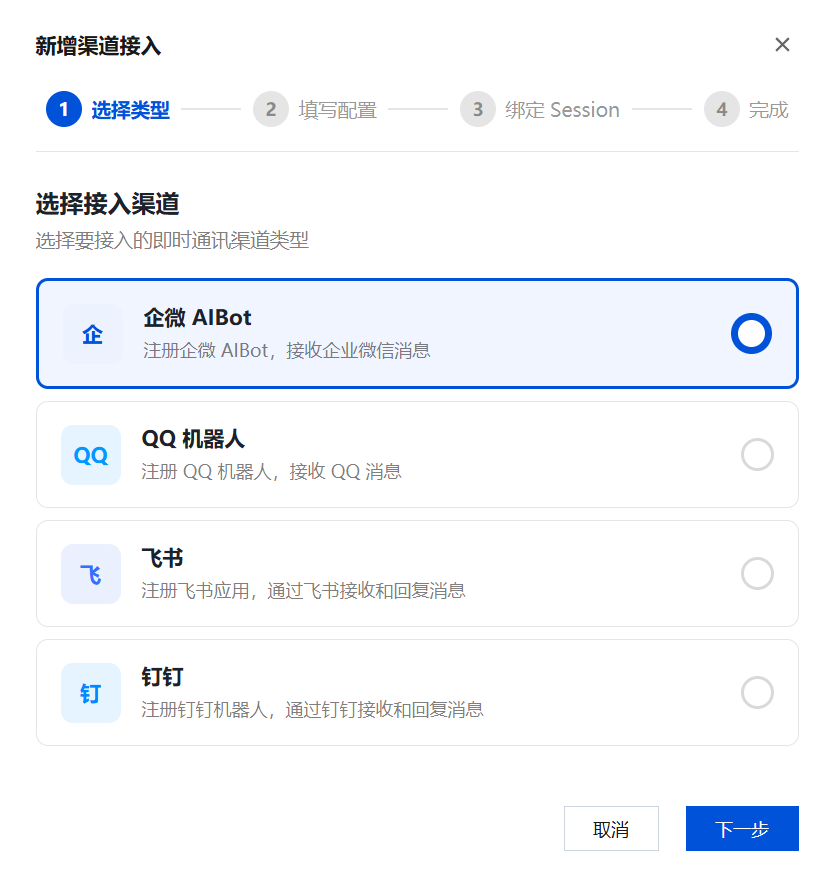
填写配置
在创建的企微 AIBot 中选择使用URL回调的连接方式，点击 Token 和 Encoding-AESKey 输入框右侧的随机获取。将获取到的Token 和 EncodingAESKey 填入对应位置：
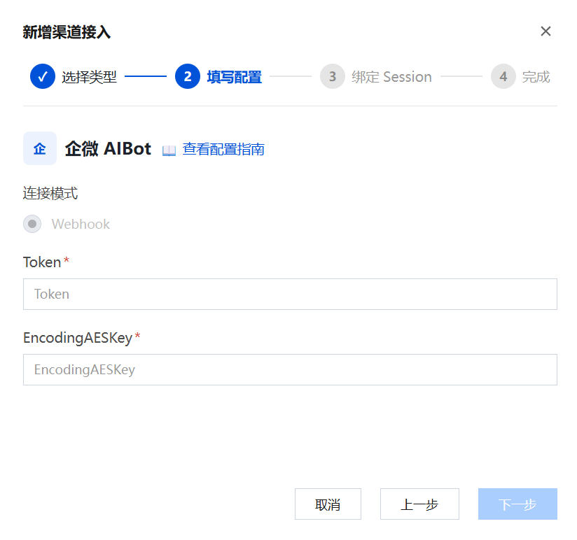
绑定 Session
选择一个 Session 与此渠道绑定，消息将路由到该 Session：
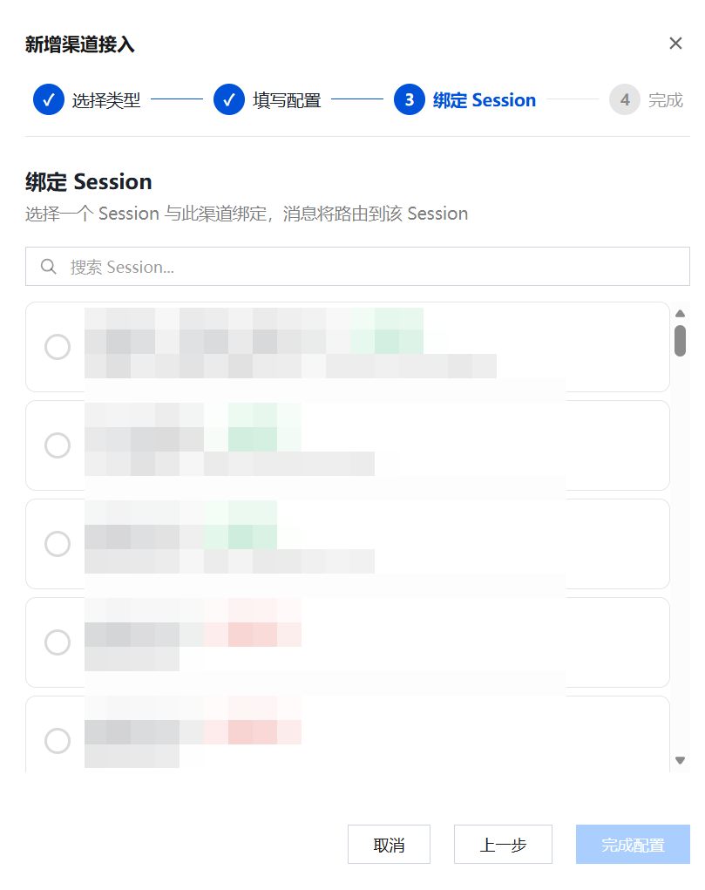
完成
复制 Webhook 地址填入 企微AIBot 连接方式中的URL位置：
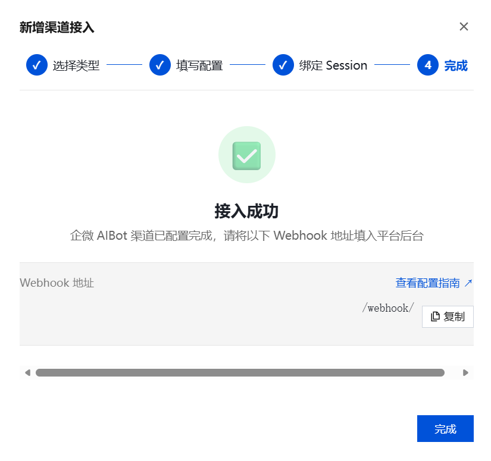
TIP
企微AIBot后台相关配置参考企业微信接入指南中的六、备选方案：使用 URL 回调接入板块。
凭据管理
凭据管理为 Agent 提供安全的凭据存储和代理注入能力。当 Agent 调用 MCP 服务、Skill 技能或外部 API时，系统会自动将对应的认证凭据注入请求中，无需在代码或配置中明文暴露密钥。
TIP
凭据以加密方式存储，仅在 Agent 运行时由代理层解密并注入请求头，确保凭据在传输和存储过程中的安全性。
添加凭据
进入企业后台，在企业智能体-凭据管理右上角点击添加凭据，填写以下信息后点击下一步完成凭据添加。
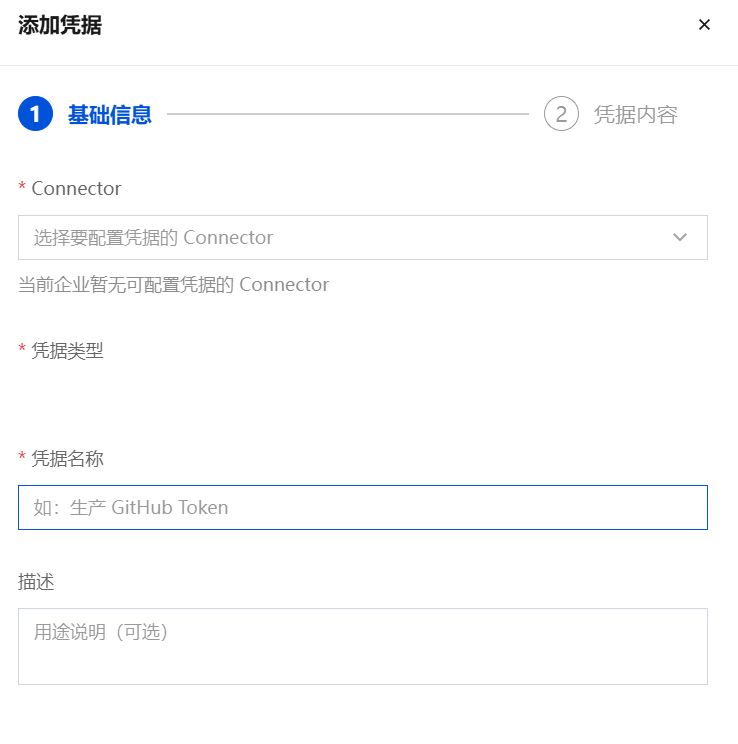
管理 Agent
Agent
进入企业后台的企业智能体-Agent板块可以查看已创建的Agent信息，对Agent进行接入、版本管理、编辑、克隆、删除等操作。
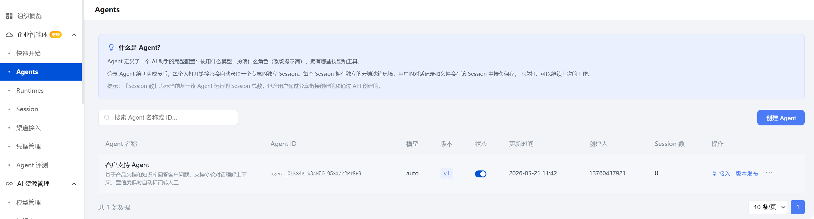
TIP
「Session 数」表示当前基于该 Agent 运行的 Session 总数，包含用户通过分享链接创建的和通过 API 创建的。
接入
将 Agent 通过接入操作，复制链接分享给团队成员后，每个人打开链接都会自动获得一个专属的独立 Session。
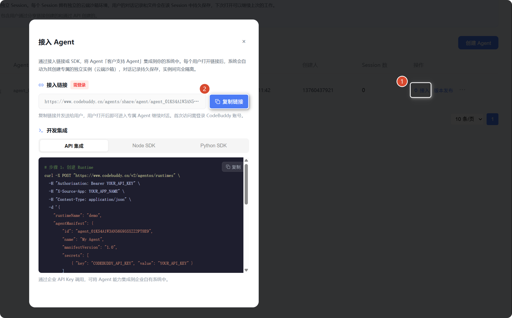
- 接入链接：团队成员打开链接可见的独立 Session：
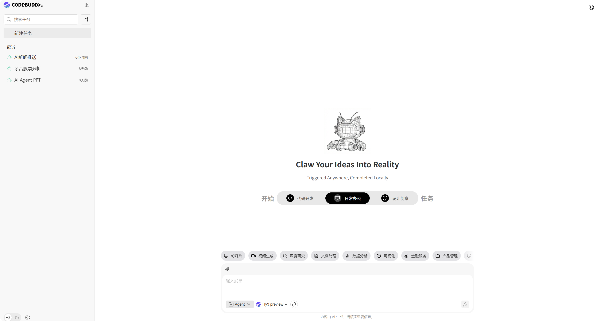
- 开发集成-API集成：通过企业 API Key 调用，可将 Agent 能力集成到企业自有系统中。
版本管理
点击对应Agent的版本发布操作，进入版本管理页面，查看和编辑版本历史。
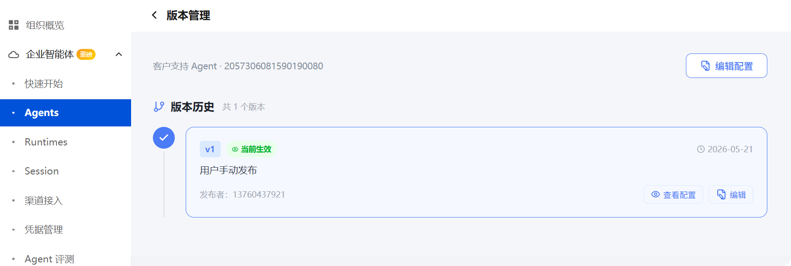
Runtime
Runtime 页面面向运维管理，展示沙箱的真实运行状态。
- 运行中 = 沙箱正在活跃服务
- 休眠 = 空闲超时后自动暂停（再次访问自动唤醒）
- 失败 = 沙箱创建或启动异常
当 Session 出现问题时，可在此排查沙箱模板、状态和错误原因。
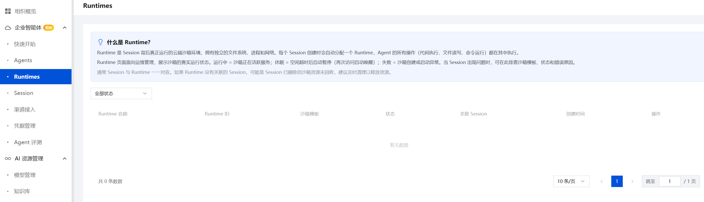
TIP
通常 Session 与 Runtime 一一对应。如果 Runtime 没有关联的 Session，可能是 Session 已删除但沙箱资源未回收，建议及时清理以释放资源。
Session
当用户通过分享链接打开 Agent 或通过 API 调用时，系统会自动创建一个专属 Session，承载该用户的所有对话记录和产出文件。
- 对话历史独立： 每个 Session 拥有独立的对话历史和文件存储，用户下次打开可以继续上次的工作。
- 自动休眠机制： Session 超过 10 分钟无访问会自动休眠以节省资源，再次访问时自动唤醒。
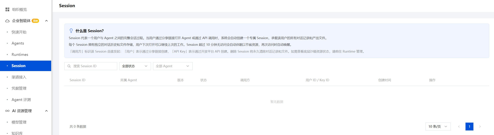
列表字段说明
- 调用方：标识该 Session 由谁发起。
- 用户：表示通过分享链接创建。
- API Key：表示通过开放平台 API 创建。
WARNING
删除 Session 将永久清除对话记录和文件。
Agent 评测
通过标准化的评测任务衡量 Agent 的回答质量。选择目标 Agent 和评测数据集，系统会自动逐条运行测试用例并按照指定的评分方式计算得分，帮助你量化 Agent 的能力表现。
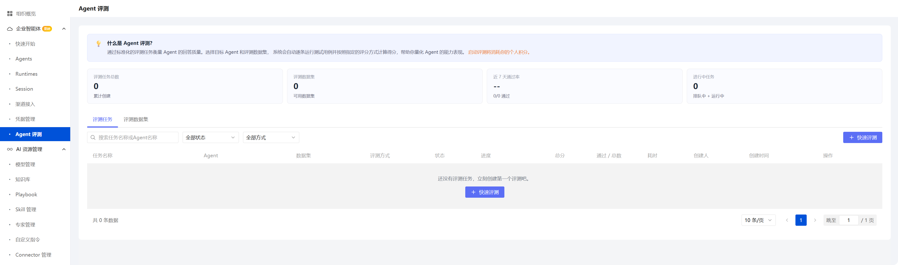
TIP
启动评测将消耗你的个人积分。